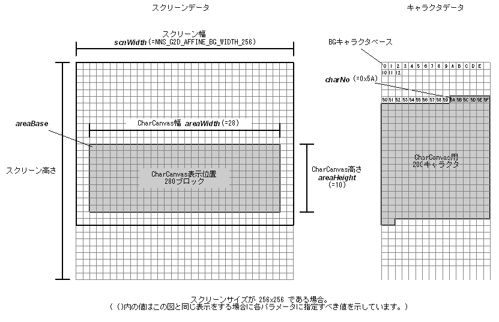

#include <nnsys/g2d/g2d_CharCanvas.h>
void NNS_G2dMapScrToCharAffine(
void* areaBase,
int areaWidth,
int areaHeight,
NNSG2dAffineBGWidth scnWidth,
int charNo
);
| areaBase | [OUT] CharCanvas 表示位置左上隅に対応するスクリーンへのポインタ |
| areaWidth | [IN] CharCanvasの幅 (キャラクタ単位) |
| areaHeight | [IN] CharCanvasの高さ (キャラクタ単位) |
| scnWidth | [IN] スクリーンの幅 |
| charNo | [IN] CharCanvas に割り当てられているキャラクタの始点のキャラクタ番号 |
なし。
アフィン BG 面のスクリーンを CharCanvas を表示できるように設定します。
scnWidth には以下のいずれかを指定します。
| NNS_G2D_AFFINE_BG_WIDTH_128 | スクリーン幅が128（スクリーンサイズが128x128）ピクセル |
| NNS_G2D_AFFINE_BG_WIDTH_256 | スクリーン幅が256（スクリーンサイズが256x256）ピクセル |
| NNS_G2D_AFFINE_BG_WIDTH_512 | スクリーン幅が512（スクリーンサイズが512x512）ピクセル |
| NNS_G2D_AFFINE_BG_WIDTH_1024 | スクリーン幅が1024（スクリーンサイズが1024x1024）ピクセル |

2005/05/25 初版